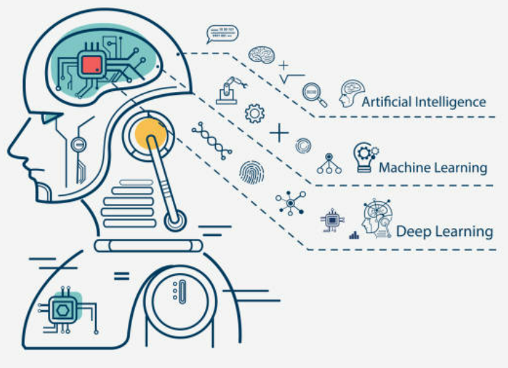
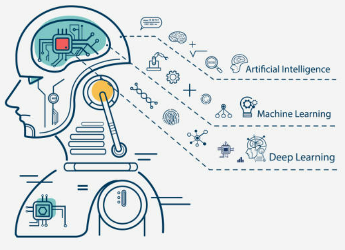
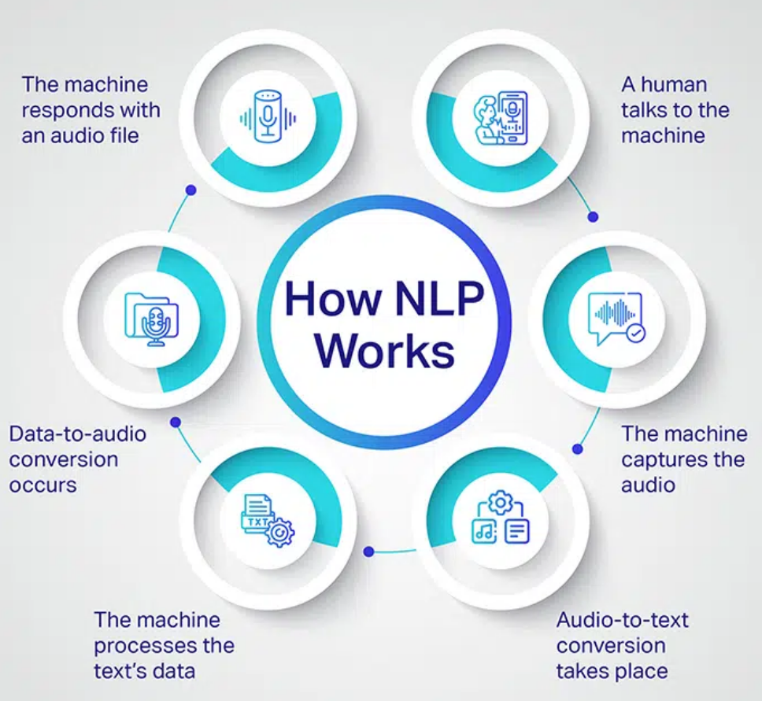
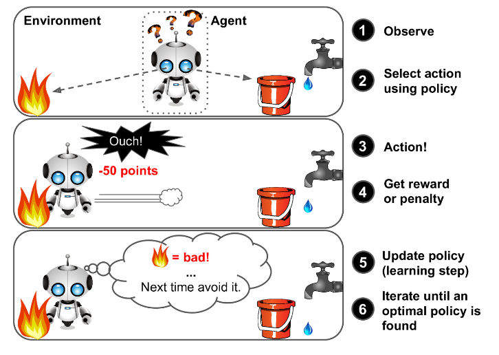

인공지능 기술은 다양한 분야에서 복잡한 문제를 해결하기 위해 사용된다.
다음은 주요 인공지능 기술들에 대한 설명이다.
Machine Learning(ML)
 

Machine Learning은 인간이 학습을 통해 정확도를 점직적으로 개선하는
방식을 모방하기 위한 데이터와 알고리즘의 사용에 초점은 맞춘
인공지능(AI) 및 컴퓨터 사이언스의 한 분야이다. 데이터에서 패턴을
학습하고 예측을 만드는 알고리즘을 개발하는 기술로, 지도학습,
비지도학습, 강화학습 등을 포함한다.
머신러닝은 학습과 개선을 위해 명시적으로 컴퓨터를 프로그래밍하는
대신, 컴퓨터가 데이터를 통해 학습하고 경험을 통해 개선하도록
훈련하는 데 중점을 둔다. 머신러닝에서 알고리즘은 대규모 데이터
세트에서 패턴과 상관관계를 찾고 분석을 토대로 최적의 의사결정과
예측을 수행하도록 훈련된다. 머신러닝 애플리케이션은 적용을 통해
개선되며 이용 가능한 데이터가 증가할수록 더욱 정확해진다.
Deep Learning
딥 러닝은 인간의 두뇌에서 영감을 얻은 방식으로 데이터를 처리하도록
컴퓨터를 가르치는 인공 지능(AI) 방식으로, 이미지 인식, 음성 인식,
자연어 처리 등 복잡한 문제를 해결하는 데 사용된다. 이미지를
설명하거나 사운드 파일을 텍스트로 변환하는 등 일반적으로 인간의
지능이 필요한 작업을 자동화하는 데 딥 러닝 방법을 사용할 수 있다.
딥 러닝은 자동차, 항공 우주, 제조, 전자, 의학 연구 및 기타 분야에서
여러 가지 사용 사례에 활용된다. 다음은 딥 러닝의 몇 가지 예시이다.
-
자율 주행 자동차는 딥 러닝 모델을 사용하여 도로 표지판과 보행자를
자동으로 감지한다.
-
의료 영상 분석은 딥 러닝을 사용하여 의학적 진단에서 암세포를
자동으로 감지한다.
-
공장에서는 딥 러닝 애플리케이션을 사용하여 사람이나 물체가
기계로부터 안전하지 않은 거리 내에 있는 경우를 자동으로 감지한다.
자연어 처리(NLP)

자연어 처리(NLP)는 컴퓨터에게 인간과 매우 유사한 방식으로 텍스트 및
음성 언어를 이해하는 능력을 부여하는 것과 관련된 인공지능의 한
분야이다.
NLP는 인간 언어를 규칙 기반으로 모델링하는 전산언어학과 통계적 머신
러닝 및 딥 러닝 모델을 결합한다. 이러한 기술들은 컴퓨터가 텍스트
또는 음성 데이터의 형태로 인간의 언어를 처리하고, 발화자 또는
작성자의 의도와 감정을 포함한 완전한 의미를 '이해'할 수 있도록 한다.
이 기술은 번역, 감성 분성, 챗봇 등에 활용된다.
컴퓨터 비전
컴퓨터 비전은 인공지능(AI)의 한 분야로, 컴퓨터와 시스템을 통해
디지털 이미지, 비디오 및 기타 시각적 입력에서 의미 있는 정보를
추출한 다음 이러한 정보를 바탕으로 작업을 실행한다. AI를 통해
컴퓨터가 생각을 할 수 있다면 컴퓨터 비전을 통해서는 컴퓨터가 보고,
관찰하고 이해할 수 있다.
다음은 컴퓨터 비전 사용의 몇 가지 예시이다.
- 이미지 분류
- 객체 감지
- 객체 추적
- 컨텐츠 기반 이미지 검색
강화학습

강화는 시행착오를 통해 학습하는 방법 중 하나를 의미한다. 이러한
강화를 바탕으로 강화학습은 실수와 보상을 통해 학습을 하여 목표를
찾아가는 알고리즘이다. 기존의 신경망들이 정답이 있는 데이터를 통해서
가중치와 편향을 학습하는 것과 비슷하게 보상이라는 개념을 사용하여
가중치와 편향을 학습하는 것이다.
목적은 최적의 행동양식 또는 정책을 학습하는 것이다.